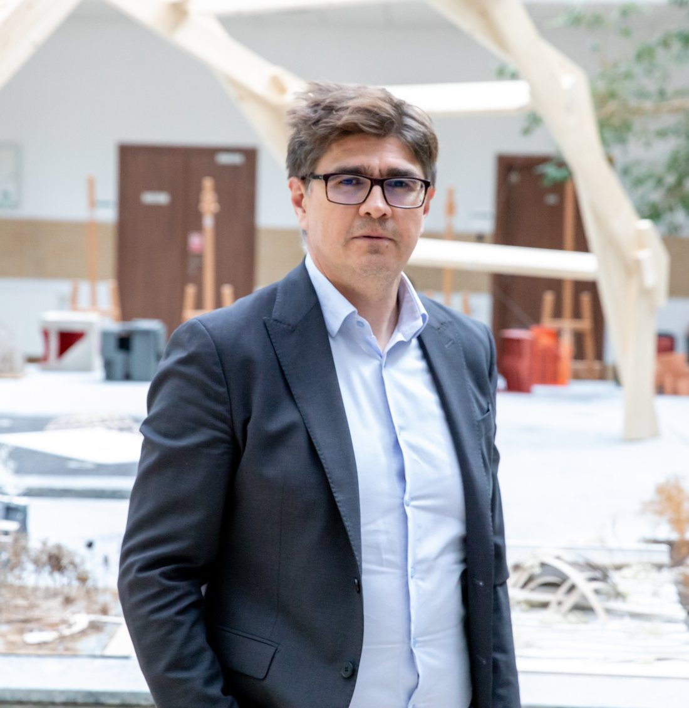
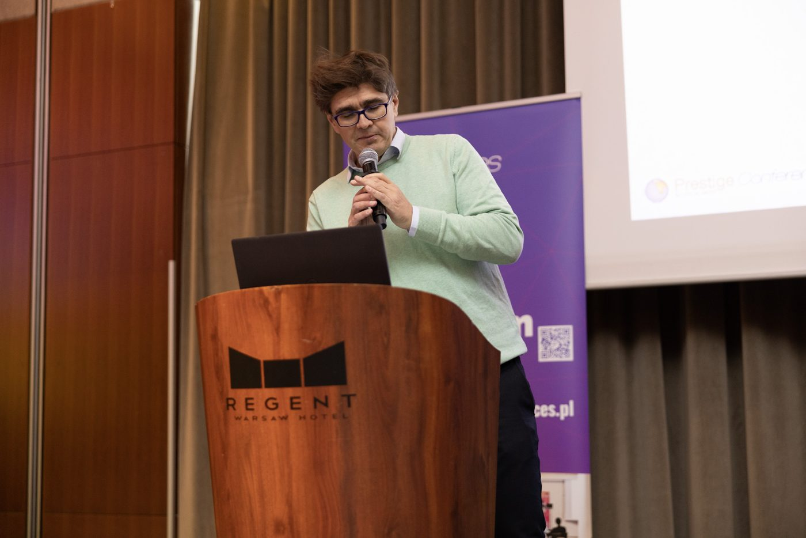
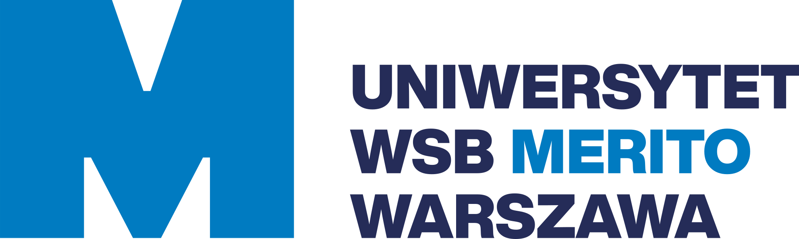

Szkoła Główna Gospodarstwa Wiejskiego w Warszawie
Statystyka i analiza danych dla nauk społecznych – od podstaw wnioskowania po analizę wielowymiarową i analizę sieci.
Statystyka dla socjologówAnaliza sieci społecznychAnaliza danych w Pythonie
Modele ryzyka, walidacja, kapitał
Buduję, oceniam i bronię modele ryzyka. Moje projekty zawsze dotyczyły realnego problemu biznesowego – z jego wymiarem finansowym i kosztem wdrożenia zmian. Często wymagały wyjścia poza przyjęty sposób myślenia.
Na szkoleniach przenoszę to doświadczenie na salę: pracujemy na przypadkach z banków, raportach walidacyjnych i decyzjach komitetów.

Trzy perspektywy na te same modele: tego, kto je ocenia i broni przed nadzorcą, tego, kto buduje systemy do ich liczenia – i tego, kto doradza.
Wystąpienia na konferencjach sektorowych i naukowych w Polsce i za granicą – o modelach kapitałowych, ryzyku operacyjnym i granicach statystyki w finansach.

Zarządzanie ryzykiem operacyjnym. Aktualne trendy i wyzwania
Protection and Security in Financial Market
CRR III / CRD VI – wyzwania dla sektora bankowego
4th Annual Banking Operational Risk Summit
Wystąpienia w NBP (2009, także wykład dla przedstawicieli banków centralnych z Europy Wschodniej i Azji) i na konferencji Gazety Bankowej (2008).
Na uczelniach uczę metod ilościowych i zarządzania ryzykiem. Zależy mi, by studenci rozumieli nie tylko technikę, ale też założenia i ograniczenia opisu zjawisk za pomocą liczb.
Statystyka i analiza danych dla nauk społecznych – od podstaw wnioskowania po analizę wielowymiarową i analizę sieci.

Zarządzanie ryzykiem i metody ilościowe dla przyszłych menedżerów i finansistów.
Badam, czy zjawiska finansowe da się zasadnie opisywać jako losowe – i jak instytucje komunikują niepewność zdarzeń skrajnych.
2026 · preprint
Matematyczne własności metody AMA, które mogły doprowadzić do jej nieskuteczności – i pytanie, czy zjawiska skrajne da się w ogóle modelować statystycznie.
2026 · preprint
Kwantyl 0,999 jako „zdarzenie raz na 1000 lat” – etykieta bez oparcia w modelu ani w rzeczywistości. Analogia z „powodzią stuletnią” w hydrologii.
 Ryzyko systemowe · regulacje
Ryzyko systemowe · regulacjeIle lat trzeba czekać na katastrofę, przed którą chroni nas system regulacyjny? Według dokumentów nadzorczych – tysiąc.
Czytaj ↗ Powódź stuletnia · ryzyko ekstremalne
Powódź stuletnia · ryzyko ekstremalneSkąd finanse wzięły okres powrotu, stacjonarność i teorię wartości ekstremalnych – i co hydrologia wie o nich dziś.
Czytaj ↗ Błądzenie losowe · ryzyko kredytowe
Błądzenie losowe · ryzyko kredytoweOd Bacheliera i Wienera, przez Blacka-Scholesa, Mertona i Vasicka, do wymogów kapitałowych Bazylei.
Czytaj ↗Autorski wykład dla studentów i pracowników naukowych: historia metod modelowania ryzyk finansowych, zestawiona z metodami hydrologii – i problemy u fundamentów przyjętego w nich rozumowania.
W skrócie – pełne zestawienie projektów, metodyk i metod jest w szczegółowym profilu.
Interesuje mnie przede wszystkim to, czy model naprawdę opisuje rzeczywistość – i co zrobić, gdy nie opisuje.